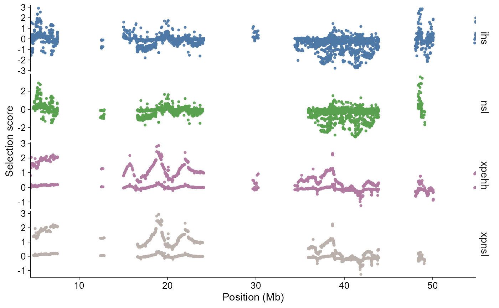
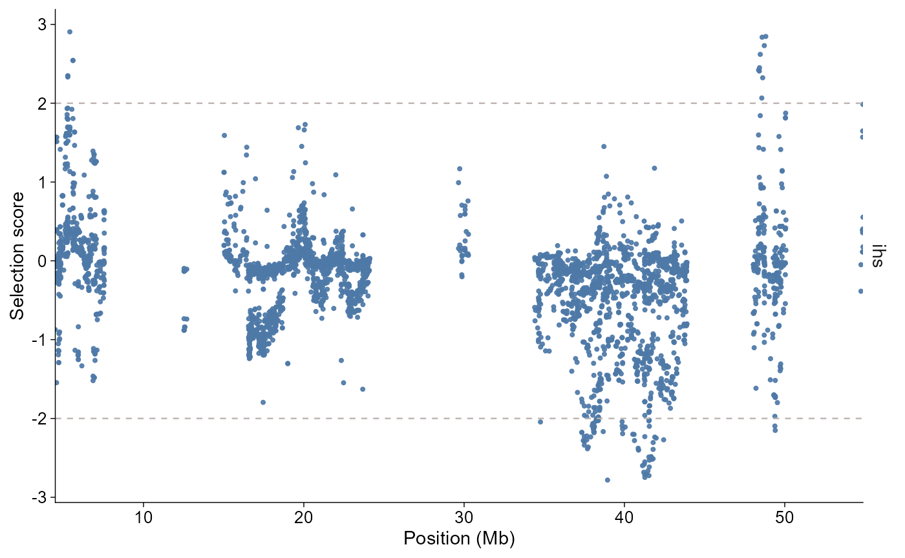
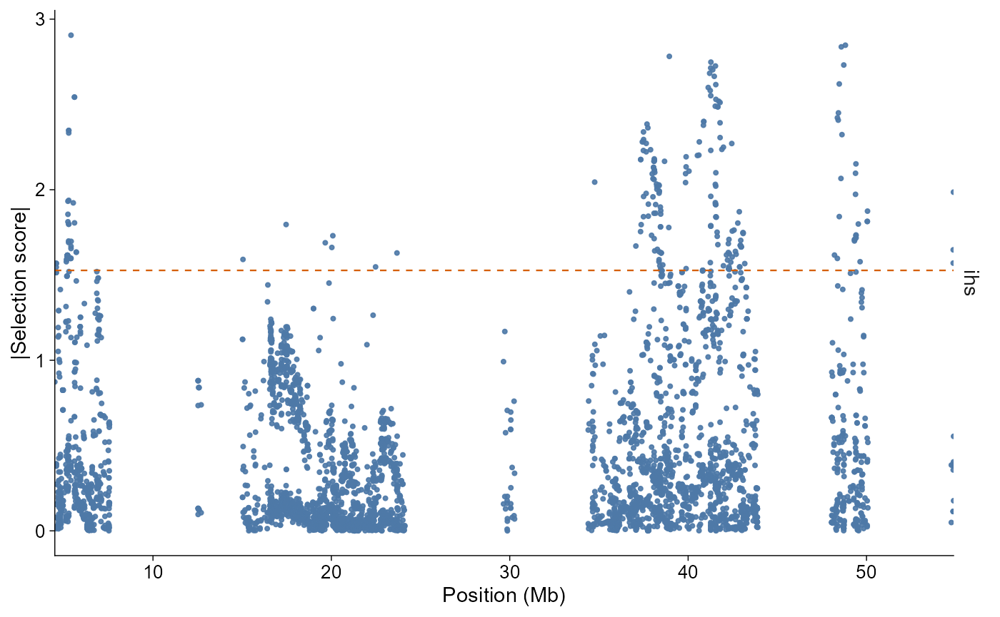
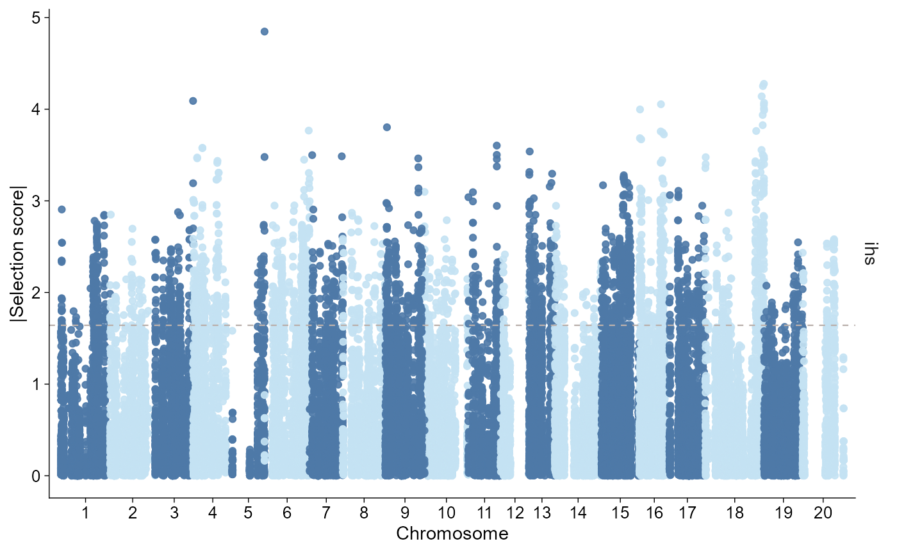
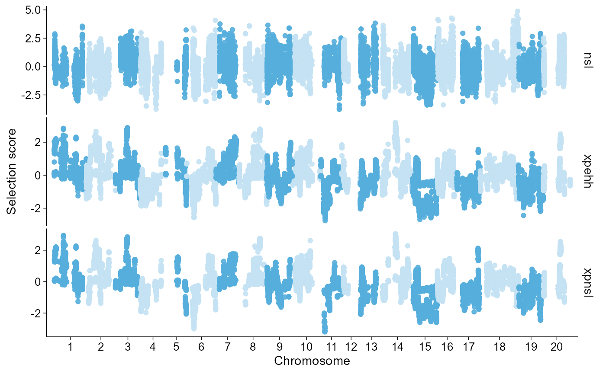
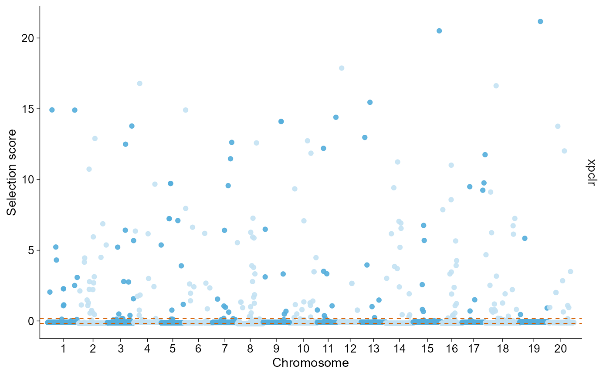

ggpop imports selection scan outputs into a typed
ggpop_selection object. The module supports common selscan
normalized outputs and XPCLR window tables.
API summary
| Task | API | Notes |
|---|---|---|
| Import selscan results | import_selection(dir, type = "selscan") |
Auto-discovers iHS, nSL, iHH12, XP-EHH, and XP-nSL norm files |
| Import XPCLR windows | import_selection(dir, type = "xpclr") |
Uses window midpoint as pos and keeps
start / end
|
| Direct plot | plot_selection(data, stat = ..., chr = ...) |
Returns a ggplot object |
| Layered plot | ggpop(data) + geom_selection(...) |
Tidy ggplot extension path |
| Region filter |
chr, start, end
|
Keeps points or windows overlapping the region |
| Plot style |
style = "auto" / "single" /
"manhattan"
|
Genome-wide calls default to Manhattan-like; local calls default to single-region |
| Thresholds |
threshold = 2 or
threshold = 0.95, threshold_type = "quantile"
|
Fixed score cutoffs or filtered-data quantiles |
| Score sign |
value = "signed" / "absolute"
|
Signed z-score-like views or absolute outlier magnitude |
Import selscan results
The bundled selscan example contains normalized iHS, nSL, iHH12, XP-EHH, and XP-nSL outputs. Directory imports auto-discover supported result files.
selscan_dir <- ggpop_extdata("selective_sweep", "selscan")
selscan <- import_selection(selscan_dir, type = "selscan")
class(selscan)
#> [1] "ggpop_selection" "data.frame"
unique(selscan$stat)
#> [1] "ihh12" "ihs" "nsl" "xpehh" "xpnsl"You can also import selected files explicitly. Relative paths are
resolved inside dir.
selscan_chr1 <- import_selection(
selscan_dir,
ihs = "chr1.ihs.out.100bins.norm",
nsl = "chr1.nsl.out.100bins.norm",
xpehh = "chr1.xpehh.out.norm",
xpnsl = "chr1.xpnsl.out.norm",
type = "selscan"
)
unique(selscan_chr1$stat)
#> [1] "ihh12" "ihs" "nsl" "xpehh" "xpnsl"Plot scan statistics
plot_selection() stacks selected statistics vertically
and keeps genomic position aligned on the x-axis. Region filters work on
points for selscan and on overlapping windows for XPCLR. By default,
genome-wide calls use a Manhattan-like chromosome axis. Calls with
chr, start, or end use the
single-region style, where position is shown directly in megabases.
plot_selection(
selscan_chr1,
stat = c("ihs", "nsl", "xpehh", "xpnsl"),
chr = "1"
)
The layered API follows the same grammar as the other modules:
selscan_chr1 |>
ggpop() +
geom_selection(stat = "ihs", chr = "1", threshold = 2)
Use value = "absolute" when the direction of the
statistic is less important than the magnitude. Quantile thresholds are
computed after the statistic, chromosome, and region filters are
applied.
plot_selection(
selscan_chr1,
stat = "ihs",
chr = "1",
value = "absolute",
threshold = 0.95,
threshold_type = "quantile"
)
Manhattan-like genome axis
For genome-wide scan summaries, it is often useful to lay chromosomes end to end like a Manhattan plot. Fine-scale structure is compressed, but this view is good for seeing chromosome-scale shifts and scan outliers across the genome.
selscan_selected <- import_selection(
selscan_dir,
ihs1 = "chr1.ihs.out.100bins.norm",
ihs2 = "chr2.ihs.out.100bins.norm",
ihs3 = "chr3.ihs.out.100bins.norm",
nsl1 = "chr1.nsl.out.100bins.norm",
nsl2 = "chr2.nsl.out.100bins.norm",
nsl3 = "chr3.nsl.out.100bins.norm",
xpehh1 = "chr1.xpehh.out.norm",
xpehh2 = "chr2.xpehh.out.norm",
xpehh3 = "chr3.xpehh.out.norm",
xpnsl1 = "chr1.xpnsl.out.norm",
xpnsl2 = "chr2.xpnsl.out.norm",
xpnsl3 = "chr3.xpnsl.out.norm",
type = "selscan"
)
finite_scan <- selscan_selected[is.finite(selscan_selected$value), ]Show absolute iHS on its own scale:
plot_selection(
finite_scan,
stat = "ihs",
style = "manhattan",
value = "absolute",
threshold = 0.95,
threshold_type = "quantile"
)
Plot normalized nSL, XP-EHH, and XP-nSL as z-score-like panels:
plot_selection(
finite_scan,
stat = c("nsl", "xpehh", "xpnsl"),
style = "manhattan"
)
Import XPCLR windows
XPCLR outputs are window-based. The importer keeps the original
start and end columns, computes
pos as the midpoint, and prefers xpclr_norm
when it is available.
xpclr_dir <- ggpop_extdata("selective_sweep", "xpclr")
xpclr <- import_selection(xpclr_dir, type = "xpclr")
class(xpclr)
#> [1] "ggpop_selection" "data.frame"
unique(xpclr$stat)
#> [1] "xpclr"
head(xpclr[c("chr", "start", "end", "pos", "value")])
#> chr start end pos value
#> xpclr_allchr_merged.tsv.1 1 1 5e+05 250000.5 -0.1051471
#> xpclr_allchr_merged.tsv.2 1 100001 6e+05 350000.5 -0.1051471
#> xpclr_allchr_merged.tsv.3 1 200001 7e+05 450000.5 -0.1051471
#> xpclr_allchr_merged.tsv.4 1 300001 8e+05 550000.5 -0.1051471
#> xpclr_allchr_merged.tsv.5 1 400001 9e+05 650000.5 -0.1051471
#> xpclr_allchr_merged.tsv.6 1 500001 1e+06 750000.5 -0.1051471
plot_selection(
xpclr,
stat = "xpclr",
style = "manhattan",
threshold = 0.95,
threshold_type = "quantile"
)
Use geom_selection() when the scan should be composed
with additional ggplot layers or annotations.